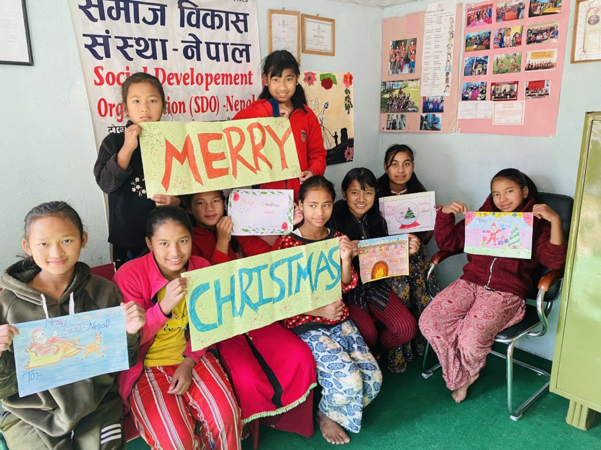

Montessori & Nursery
At our school, we take pride in the quality of education we provide for our young learners in Montessori and Nursery classes. Our curriculum is designed to nurture the holistic development of each child, focusing not only on academic achievement but also on their social, emotional, and physical growth. Our teachers are highly trained professionals who utilize the Montessori method, a child-centered approach that encourages independent learning and exploration. Our classrooms are equipped with engaging learning materials and age-appropriate toys that stimulate curiosity and creativity. We aim to provide a safe and inclusive learning environment that promotes respect, diversity, and community building. With our well-rounded education and personalized attention, we prepare our students for a successful future in their academic journey and beyond.
+2 Science
Science students studying in class 11 and 12 have the privilege of learning from highly qualified and experienced professors who possess a wealth of knowledge in their respective fields. The professors are not only experts in their subjects but also passionate about imparting their knowledge to their students. Additionally, the laboratory experiments and tests that students get to perform as part of their coursework add an element of practicality to their learning. These experiments provide students with hands-on experience in applying theoretical concepts, making them more adept at understanding and solving problems. Overall, science students have access to an exceptional learning environment that helps them acquire the skills and knowledge needed to succeed in their future careers.
Subjects: Compulsary English,
Compulsary Nepali,
Mathematics,
Physics,
Chemistry &
Biology or Computer Science.
UKG & KG

At our school, we understand that parents want the best for their children, especially when it comes to education. That's why we take great care in providing an enriching and rewarding learning experience for our young learners in Kindergarten and Upper Kindergarten classes. Our curriculum is designed to nurture the holistic development of each child, focusing not only on academic achievement but also on their social, emotional, and physical growth. Our teachers are highly trained professionals who utilize the latest educational practices and methodologies to ensure that each child is challenged and engaged in their learning. We have a variety of age-appropriate learning materials, activities, and toys that promote curiosity, creativity, and critical thinking. Our classrooms are safe, inclusive, and welcoming environments that foster respect, diversity, and community building. By giving personalized attention to each child, we ensure that they receive the best possible preparation for their academic journey and beyond. We are committed to working with parents as partners in their child's education and providing ongoing feedback to keep them informed of their child's progress. We believe that by laying a strong foundation in these early years, we are setting our students up for lifelong success.
+2 Management
Management students studying in class 11 and 12 have access to some of the best professors in the field. These professors are highly experienced and well-versed in the latest trends and techniques in management. Additionally, students pursuing hotel management as a specialization also get the opportunity to learn cooking as a part of their practical knowledge. This enables them to understand the intricacies of running a hotel or restaurant, including managing the kitchen and ensuring high-quality food for customers. With the right combination of theoretical and practical knowledge, management students are well-prepared to take on leadership roles in various industries and organizations.
Sections will be divided based on what the student would like to study i.e Computer Science, Hotel Management & Business
Subjects: Compulsary English,
Compulsary Nepali,
Principle of Accounting,
Introduction to Economics,
Business Math,
Business studies,
Hotel Management,
Computer Science &
Social Studies.(Subjects will be decided according to section)(6 Subjects)
Class 1 to 5

At our school, we take great care in providing a nurturing and enriching environment for our students in grades 1 to 5. These early years are crucial for a child's development, and we recognize that this is the most optimal age for learning. Our curriculum is designed to promote intellectual curiosity, creativity, and critical thinking, while also focusing on the holistic growth of our students. Our teachers are highly qualified and passionate professionals who work hard to provide a stimulating and challenging education that caters to the diverse needs of each student. Along with academic excellence, we emphasize the importance of values such as manners, respect, and freedom, which are essential in shaping our students into responsible and compassionate individuals. Our classrooms are equipped with modern technology and educational resources that make learning engaging and fun. We also provide a range of extracurricular activities and clubs to promote social interaction and teamwork. At our school, we strive to provide a well-rounded education that prepares our students for a successful future.
+2 Education
For students studying Education in class 11 and 12, they have the privilege of learning from highly qualified professors who have a wealth of experience in the field. These professors not only impart theoretical knowledge to the students but also share their practical experience, making the learning process more engaging and effective. Furthermore, students pursuing a career in Education get hands-on experience through internships and practical assignments, which prepare them for their bachelor's degree. This practical knowledge equips students with the skills necessary to navigate the education sector successfully. The faculty members ensure that students are not only proficient in their subject matter but also have a deep understanding of the pedagogical techniques necessary to be effective teachers in the future.
Subjects: Compulsary English,
Compulsary Nepali,
Major English,
Major Nepali,
Major Mathematics,
Major Health &
Major Population
Class 6 to 10
In our school, we believe that classes 6 to 10 are some of the most crucial years of a student's academic journey. During these years, students are at an age where they are capable of making important decisions that can shape their future. With this in mind, we provide a supportive and challenging environment for our students to grow and learn. Our experienced teachers use innovative and interactive teaching methods to engage students and help them develop a deeper understanding of the subjects. We understand the importance of board exams, and that's why we have mentors who guide and motivate our students to excel in their studies. Students in class 10 prepare for the Secondary Education Examination (SEE), while those in class 8 prepare for the Basic Educational Examination (BEE). We focus not only on academic achievement but also on the holistic development of our students, teaching them manners, freedom, and respect, which are essential life skills. Our aim is to prepare our students for the challenges they may face in their future academic and professional careers.
Bachelor of Education
We at Nepal Adarsha College are thrilled to invite you to join our community of learners and educators. We understand that choosing the right college to pursue your education degree is a crucial decision, and we believe that our college offers a unique and enriching experience that will help you achieve your academic and career goals.Our faculty members are highly experienced and renowned in the education field, and they are committed to providing you with a world-class education. You will have the opportunity to learn from and interact with experts in the field who are passionate about teaching and mentoring students. Moreover, we believe in providing a well-rounded education that not only focuses on academics but also includes practical training and experience. You will have access to a wide range of internship opportunities that will allow you to gain practical knowledge and experience in real-world settings.
Subjects: Compulsary English,
Compulsary Nepali,
Major English,
Major Nepali,
Major Mathematics,
Major Economics &
Major Population
Bachelor of Business Studies
Bachelor of Business Studies is a highly sought-after course for students interested in pursuing a career in the field of business. At our college, we take pride in having a team of highly qualified and experienced professors who possess an in-depth understanding of the business world. Our professors come from diverse backgrounds and bring with them a wealth of knowledge and expertise. They are committed to providing a dynamic and engaging learning experience that encourages students to explore and challenge their ideas. With the guidance of our professors, students develop a strong foundation in business studies, which prepares them for success in their future careers. We believe that our professors are a key factor in making our Bachelor of Business Studies program stand out among other colleges.
Subjects: Account,
Finance,
Marketing,
Investment,
PM &
Math